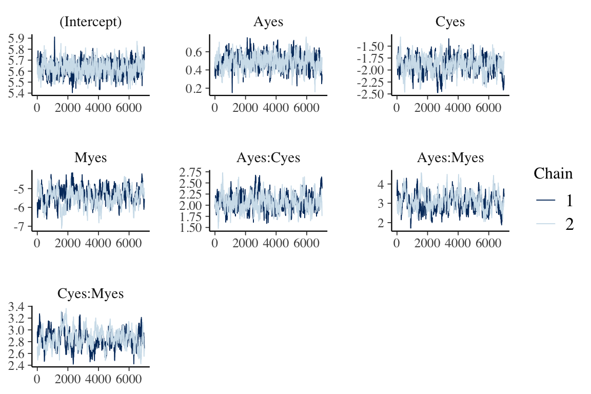

hmclearn: Poisson Regression Example
Samuel Thomas
2020-06-01
poisson_regression_hmclearn.RmdIntroduction
This vignette demonstrates fitting a Poisson regression model via Hamiltonian Monte Carlo (HMC) using the hmclearn package.
library(hmclearn)
For a count response, we let
\[ p(y | \mu) = \frac{e^{-\mu}\mu^y}{y!}, \]
with a log-link function
\[ \begin{aligned} \boldsymbol\mu &:= E(\mathbf{y} | \mathbf{X}) = e^{\mathbf{X}\boldsymbol\beta}, \\ \log \boldsymbol\mu &= \mathbf{X}\boldsymbol\beta. \end{aligned} \] The vector of responses is \(\mathbf{y} = (y_1, ..., y_n)^T\). The covariate values for the th subject are \(\mathbf{x}_i^T = (x_{i0}, ..., x_{iq})\) for \(q\) covariates plus an intercept. We write the full design matrix as \(\mathbf{X} = (\mathbf{x}_1^T, ..., \mathbf{x}_n^T)^T \in \mathbb{R}^{n\times(q+1)}\) for \(n\) observations. The regression coefficients are a vector of length \(q + 1\), \(\boldsymbol\beta = (\beta_0, ..., \beta_q)^T\).
Derive log posterior and gradient for HMC
We develop the likelihood
\[ \begin{aligned} f(\mathbf{y} | \boldsymbol\mu) &= \prod_{i=1}^n \frac{e^{-\mu_i}\mu_i^{y_i}}{y_i!}, \\ f(\mathbf{y} | \mathbf{X}, \boldsymbol\beta) &= \prod_{i=1}^n \frac{e^{-e^{\mathbf{x}_i^T\boldsymbol\beta}}e^{y_i\mathbf{x}_i^T\boldsymbol\beta}}{y_i!}, \\ \end{aligned} \]
and log-likelihood
\[ \begin{aligned} f(\mathbf{y} | \mathbf{X}, \boldsymbol\beta) &= \sum_{i=1}^n -e^{\mathbf{x}_i^T\boldsymbol\beta} + y_i \mathbf{x}_i^T \boldsymbol\beta - \log y_i!, \\ &\propto \sum_{i=1}^n -e^{\mathbf{x}_i^T\boldsymbol\beta} + y_i \mathbf{x}_i^T \boldsymbol\beta. \end{aligned} \]
We set a multivariate normal prior for \(\boldsymbol\beta\)
\[ \begin{aligned} \boldsymbol\beta &\sim N(0, \sigma_\beta^2 \mathbf{I}), \end{aligned} \]
with pdf, omitting constants
\[ \begin{aligned} \pi(\boldsymbol\beta | \sigma_\beta^2) &= \frac{1}{\sqrt{\lvert 2\pi \sigma_\beta^2 \rvert }}e^{-\frac{1}{2}\boldsymbol\beta^T \boldsymbol\beta / \sigma_\beta^2}, \\ \log \pi(\boldsymbol\beta | \sigma_\beta^2) &= -\frac{1}{2}\log(2\pi \sigma_\beta^2) - \frac{1}{2}\boldsymbol\beta^T \boldsymbol\beta / \sigma_\beta^2, \\ &\propto -\frac{1}{2}\log \sigma_\beta^2 - \frac{\boldsymbol\beta^T\boldsymbol\beta}{2\sigma_\beta^2}. \end{aligned} \]
Next, we derive the log posterior, omitting constants,
\[ \begin{aligned} f(\boldsymbol\beta | \mathbf{X}, \mathbf{y}, \sigma_\beta^2) &\propto f(\mathbf{y} | \mathbf{X}, \boldsymbol\beta) \pi(\boldsymbol\beta | \sigma_\beta^2), \\ \log f(\boldsymbol\beta | \mathbf{X}, \mathbf{y}, \sigma_\beta^2) & \propto \log f(\mathbf{y} | \mathbf{X}, \boldsymbol\beta) + \log \pi(\beta | \sigma_\beta^2), \\ &\propto \sum_{i=1}^n \left( -e^{\mathbf{x}_i^T\boldsymbol\beta} + y_i \mathbf{x}_i^T \boldsymbol\beta\right) - \frac{1}{2}\beta^T\beta/\sigma_\beta^2, \\ &\propto \sum_{i=1}^n \left( -e^{\mathbf{x}_i^T\boldsymbol\beta} + y_i \mathbf{x}_i^T \boldsymbol\beta\right) - \frac{\boldsymbol\beta^T\boldsymbol\beta}{2\sigma_\beta^2}, \\ &\propto \mathbf{y}^T\mathbf{X}\boldsymbol\beta - \mathbf{1}_n^T e^{\mathbf{X}\boldsymbol\beta} - \frac{\boldsymbol\beta^T\boldsymbol\beta}{2\sigma_\beta^2}. \end{aligned} \]
We need to derive the gradient of the log posterior for the leapfrog function in HMC.
\[ \begin{aligned} \nabla_{\boldsymbol\beta}\log f(\boldsymbol\beta|\mathbf{X}, \mathbf{y}, \sigma_\beta^2) &\propto \sum_{i=1}^n\left( -e^{\mathbf{x}_i^T\boldsymbol\beta}\mathbf{x}_i + y_i\mathbf{x}_i\right) - \boldsymbol\beta / \sigma_\beta^2, \\ &\propto \sum_{i=1}^n \mathbf{x}_i\left( -e^{\mathbf{x}_i^T\boldsymbol\beta} + y_i\right) - \boldsymbol\beta / \sigma_\beta^2, \\ &\propto \mathbf{X}^T (\mathbf{y} - e^{\mathbf{X}\boldsymbol\beta}) - \boldsymbol\beta/ \sigma_\beta^2. \end{aligned} \]
Poisson Regression Example Data
The user must define provide the design matrix directly for use in hmclearn. Our first step is to load the data and store the design matrix \(X\) and dependent variable vector \(y\).
We load drug usage data and create the design matrix \(X\) and dependent vector \(y\). This example also appears in Agresti (2015), and we compare results to his.
data(Drugs) # design matrix X <- model.matrix(count ~ A + C + M + A:C + A:M + C:M , data=Drugs) X <- X[, 1:ncol(X)] # independent variable is count data y <- Drugs$count
Comparison model - Frequentist
To compare results, we first fit a standard linear model using the frequentist function glm.
# matrix representation f <- glm(y ~ X-1, family=poisson(link=log)) summary(f) #> #> Call: #> glm(formula = y ~ X - 1, family = poisson(link = log)) #> #> Deviance Residuals: #> 1 2 3 4 5 6 7 8 #> 0.02044 -0.02658 -0.09256 0.02890 -0.33428 0.09452 0.49134 -0.03690 #> #> Coefficients: #> Estimate Std. Error z value Pr(>|z|) #> X(Intercept) 5.63342 0.05970 94.361 < 2e-16 *** #> XAyes 0.48772 0.07577 6.437 1.22e-10 *** #> XCyes -1.88667 0.16270 -11.596 < 2e-16 *** #> XMyes -5.30904 0.47520 -11.172 < 2e-16 *** #> XAyes:Cyes 2.05453 0.17406 11.803 < 2e-16 *** #> XAyes:Myes 2.98601 0.46468 6.426 1.31e-10 *** #> XCyes:Myes 2.84789 0.16384 17.382 < 2e-16 *** #> --- #> Signif. codes: 0 '***' 0.001 '**' 0.01 '*' 0.05 '.' 0.1 ' ' 1 #> #> (Dispersion parameter for poisson family taken to be 1) #> #> Null deviance: 2.4038e+04 on 8 degrees of freedom #> Residual deviance: 3.7399e-01 on 1 degrees of freedom #> AIC: 63.417 #> #> Number of Fisher Scoring iterations: 4
Fit model using hmc
Next, we fit the poisson regression model using HMC. A vector of \(\epsilon\) values are specified to align with the data.
N <- 1e4 eps_vals <- c(rep(5e-4, 2), 1e-3, 2e-3, 1e-3, 2e-3, 5e-4) set.seed(412) t1.hmc <- Sys.time() f_hmc <- hmc(N = N, theta.init = rep(0, 7), epsilon = eps_vals, L = 50, logPOSTERIOR = poisson_posterior, glogPOSTERIOR = g_poisson_posterior, varnames = colnames(X), parallel=TRUE, chains=2, param=list(y=y, X=X)) t2.hmc <- Sys.time() t2.hmc - t1.hmc #> Time difference of 30.1077 secs
MCMC summary and diagnostics
The acceptance ratio for each of the HMC chains is sufficiently high for an efficient simulation.
f_hmc$accept/N #> [1] 0.9803 0.9818
The posterior quantiles are summarized after removing an initial burnin period. The \(\hat{R}\) statistics provide an indication of convergence. Values close to one indicate that the multiple MCMC chains coverged to the same distribution, while values above 1.1 indicate possible convergence problems. All \(\hat{R}\) values in our example are close to one.
summary(f_hmc, burnin=3000) #> Summary of MCMC simulation #> 2.5% 5% 25% 50% 75% 95% #> (Intercept) 5.505984 5.5275070 5.5908739 5.633143 5.6771506 5.7334913 #> Ayes 0.338882 0.3607477 0.4331338 0.486164 0.5424177 0.6213224 #> Cyes -2.210059 -2.1582571 -2.0014130 -1.894313 -1.7860955 -1.6138105 #> Myes -6.606862 -6.3693443 -5.7708961 -5.417697 -5.1021219 -4.6904518 #> Ayes:Cyes 1.693196 1.7510429 1.9441970 2.059916 2.1743892 2.3536241 #> Ayes:Myes 2.247329 2.3675867 2.7442136 3.060883 3.4393753 4.0456650 #> Cyes:Myes 2.572533 2.6160869 2.7643253 2.870012 2.9693473 3.1486056 #> 97.5% rhat #> (Intercept) 5.7508868 1.000390 #> Ayes 0.6489339 1.002019 #> Cyes -1.5612908 1.001914 #> Myes -4.5458565 1.000666 #> Ayes:Cyes 2.4157365 1.000363 #> Ayes:Myes 4.2743185 1.000011 #> Cyes:Myes 3.2075283 1.018106
Trace plots provide a visual indication of stationarity. These plots indicate that the MCMC chains are reasonably stationary.
mcmc_trace(f_hmc, burnin=3000)

Histograms of the posterior distribution show that Bayesian parameter estimates align with Frequentist estimates.